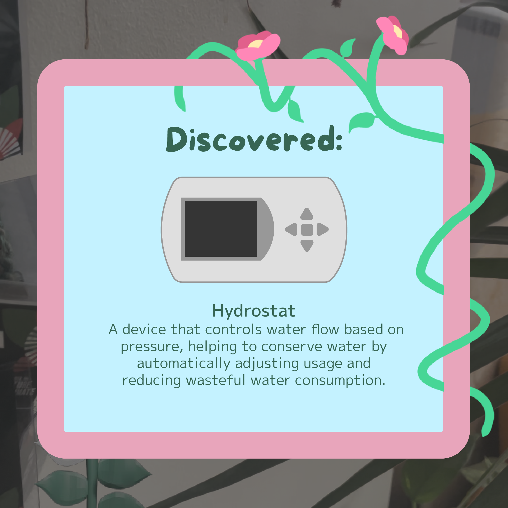

Gallery

I am a freelancer working as both a UI designer and 3D modeller, specialising in creating interactive experiences that are simple but eye catching, with the ability to be understood universally.
To me, user interface design is its own art form, not just a process of design. I do some digital illustration on the side — not only does it help to bolster my creativity, I've found myself having a fascination with the use of colours to convey feeling and emotions in everything, from artwork to physical products — and especially how it can be applied in UI.


In the realm of 3D, my passion lies in working with textures in Maya, laying out UVs and creating textures to enhance projects with both simple and high details, as well as rigging models for animation. They've had a variety of uses, from working as standalone dioramas to being featured as assets in larger projects for platforms like Unity.